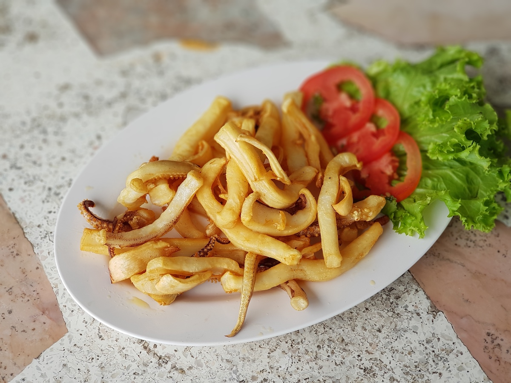
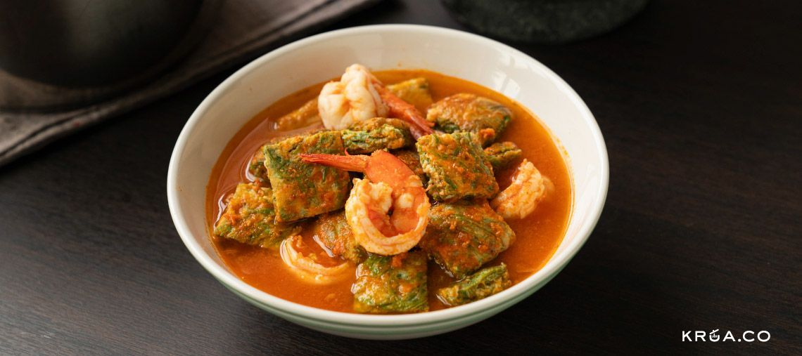
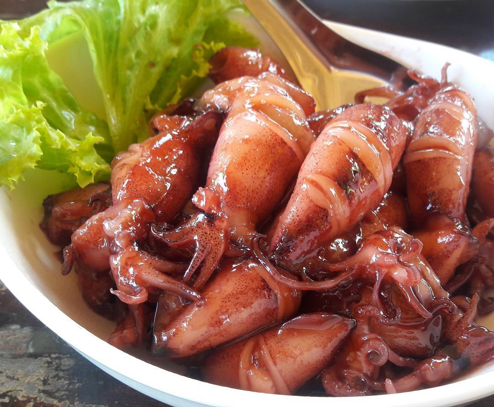
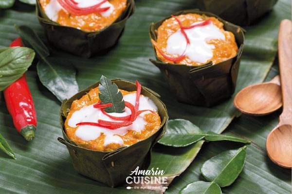

อาหารพื้นถิ่นเมืองประจวบคีรีขันธ์
สัมผัสรสชาติอาหารทะเลและอาหารท้องถิ่นที่น่าสนใจของประจวบคีรีขันธ์

1. ปลาหมึกแดดเดียว
ปลาหมึกนำมาหมักปรุงรสและทำให้แห้ง ก่อนนำไปทอดหรือย่าง รับประทานกับข้าวสวย

2. แกงส้ม
อาหารรสเปรี้ยวเผ็ด มีผักและเนื้อสัตว์หรืออาหารทะเล นิยมรับประทานกับข้าวสวย

3. หมึกต้มหวาน
เมนูปลาหมึกปรุงด้วยน้ำตาลและเครื่องปรุง ให้รสหวานเค็ม เป็นอาหารที่น่าลอง

4. ห่อหมกปลา
อาหารที่นำเนื้อปลามาผสมเครื่องแกงและกะทิ ห่อด้วยใบตองแล้วนำไปนึ่ง